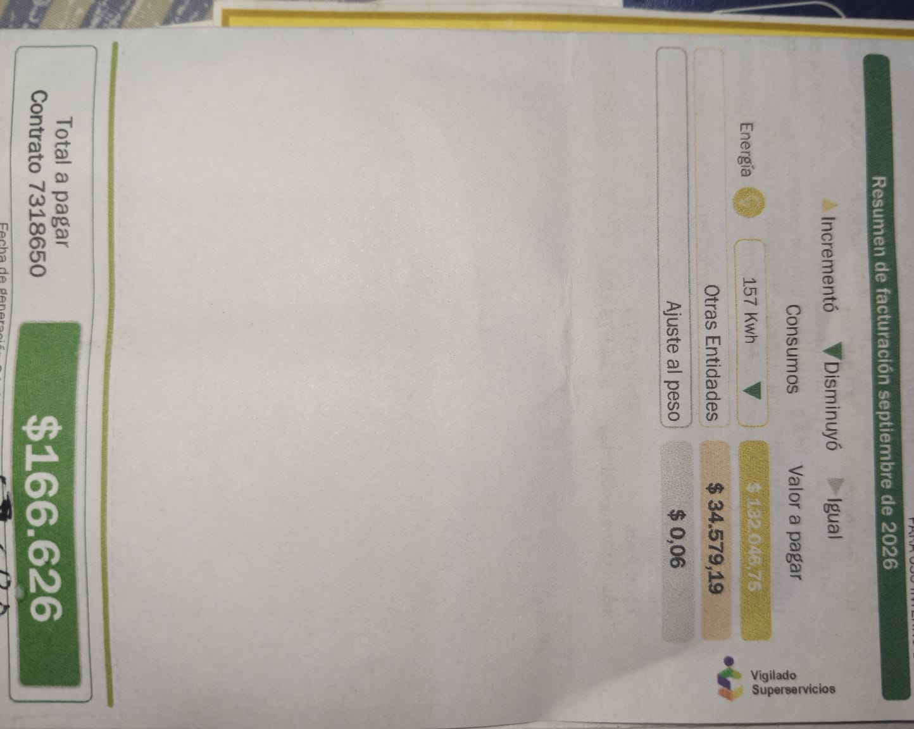
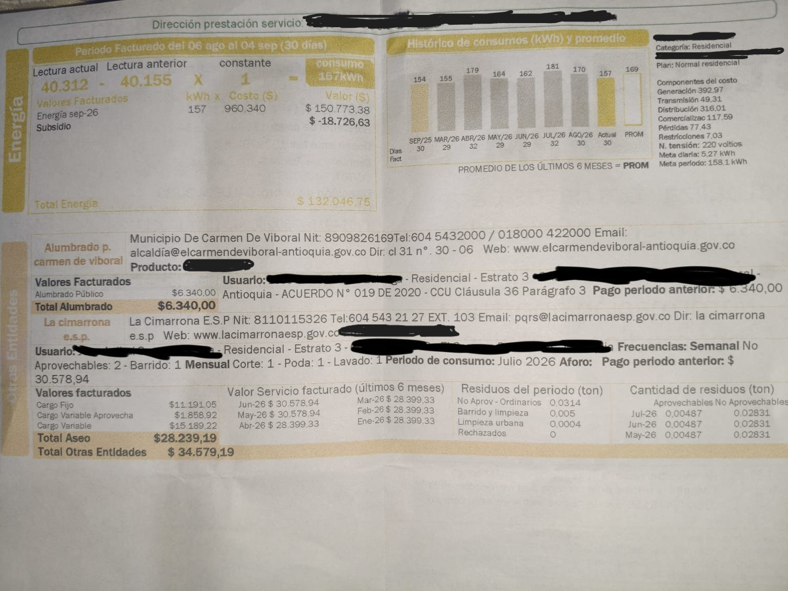

Factura de septiembre de 2026
Durante septiembre de 2026, mi hogar registró un consumo de 157 kWh, con una tarifa de $960,34 COP por kWh.
El costo de energía antes del subsidio fue de $150.773,38 COP. Después de aplicar un subsidio de $18.726,63 COP, el valor del servicio de energía quedó en $132.046,75 COP.
Al sumar los cobros de otras entidades por $34.579,19 COP y el ajuste al peso de $0,06 COP, el total real a pagar de la factura fue de $166.626 COP.
Evidencia de mi factura de energía
Se presentan las dos caras de la factura de septiembre de 2026, con los datos personales ocultos para proteger la privacidad de mi familia.
Frente de la factura

Reverso de la factura

Historial de consumo de energía
El historial permite observar las variaciones del consumo eléctrico de mi hogar durante los meses anteriores a septiembre de 2026. Los consumos en kWh provienen de la factura.
Como no conservamos las facturas anteriores, mi familia recuerda que los pagos completos generalmente oscilaban entre $150.000 y $170.000 COP, aunque algunos meses pudieron presentar valores fuera de ese rango. Por esta razón, los importes anteriores se presentan únicamente como referencia.
| Mes | Consumo (kWh) | Valor total de factura (COP) |
|---|---|---|
| Marzo 2026 | 155 | Rango familiar habitual: $150.000 - $170.000* |
| Abril 2026 | 179 | Rango familiar habitual: $150.000 - $170.000* |
| Mayo 2026 | 164 | Rango familiar habitual: $150.000 - $170.000* |
| Junio 2026 | 162 | Rango familiar habitual: $150.000 - $170.000* |
| Julio 2026 | 181 | Rango familiar habitual: $150.000 - $170.000* |
| Agosto 2026 | 170 | Rango familiar habitual: $150.000 - $170.000* |
| Septiembre 2026 | 157 | $166.626 (verificado) |
Nota: *El rango de $150.000 a $170.000 es una estimación familiar general. No representa un pago comprobado ni necesariamente corresponde a cada mes. Los importes recordados incluyen otros servicios además de la electricidad. Septiembre es el único valor total verificado con la factura disponible.
El consumo eléctrico pasó de 170 kWh en agosto a 157 kWh en septiembre, lo que representa una disminución de 13 kWh, aproximadamente un 7,65 %.
Comparación entre la proyección y la factura
En la página de equipos se calculó un consumo semanal estimado de 11,514 kWh para cuatro electrodomésticos: computador, televisor, licuadora y nevera.
Para proyectar el consumo durante un mes de 30 días, se multiplica el consumo semanal por 30 y se divide entre 7. Así se obtiene una proyección mensual aproximada de 49,35 kWh.
| Concepto | Consumo (kWh) |
|---|---|
| Proyección mensual de cuatro electrodomésticos | 49,35 |
| Consumo real registrado en la factura | 157 |
| Diferencia aproximada | 107,65 |
La diferencia de aproximadamente 107,65 kWh puede explicarse porque el hogar utiliza otros equipos eléctricos que no fueron incluidos en este análisis.
Además, los cálculos se basan en potencias nominales o típicas y tiempos estimados de utilización, por lo que no constituyen mediciones exactas del consumo eléctrico.
Con la tarifa de $960,34 COP por kWh, el costo mensual proyectado de estos cuatro equipos sería de aproximadamente $47.388,66 COP, antes de considerar subsidios u otros cobros de la factura.
Recomendaciones de ahorro para mi familia
- Mejorar el uso de la nevera: evitar abrirla innecesariamente, revisar el estado de los empaques y mantener una temperatura adecuada. Es el equipo con mayor consumo estimado, con 9,45 kWh semanales.
- Optimizar el uso del computador: activar las opciones de ahorro energético y apagarlo cuando no se esté utilizando. Su tiempo de uso es de aproximadamente 16 horas semanales.
- Controlar los aparatos encendidos: mantener el televisor apagado durante los días en que no se utiliza y evitar consumos innecesarios de los equipos eléctricos.
Estas recomendaciones buscan fomentar hábitos de consumo responsables y reducir gastos innecesarios en el hogar.